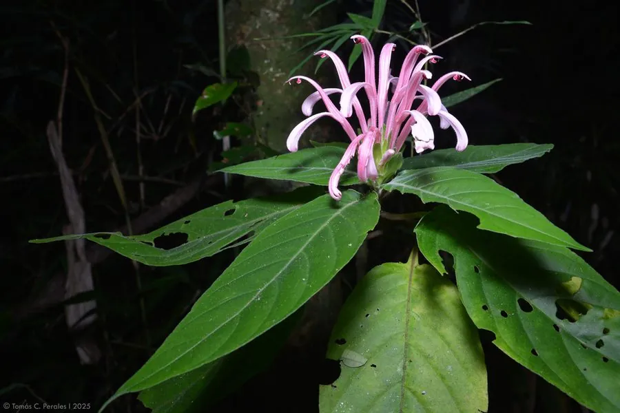

花卉与草本 · 植物界
珊瑚花 Justicia carnea

爵床科爵床属常绿灌木，花序顶生、苞片粉红、花冠紫红，形似海底珊瑚，是南方庭园与盆栽的观花植物。
- 分类
- 门被子植物门纲木兰纲目唇形目科爵床科属爵床属
- 栖息环境
- 巴西热带林缘，喜温暖湿润、半阴环境
- 地理分布
- 原产巴西；中国华南、西南及世界热带地区栽培
- 保护级别
- IUCN 暂无评估；栽培广泛，野生种群未受明显威胁
物种志
珊瑚花为常绿灌木，高 1–2 米，茎粗壮、多分枝。叶片大，卵形至长椭圆形，长 15–30 厘米，上面深绿色，叶脉下陷。穗状花序顶生，长 15–25 厘米，苞片粉红色、层层重叠，花冠紫红色，二唇形，长 4–5 厘米，从苞片中伸出，整串花序像一株粉红色的珊瑚。
本种原产巴西，喜温暖湿润、半阴的环境，在中国华南、西南常作庭园花灌木或盆栽。它花序硕大、色彩浓艳，花期长，是热带花园中常见的背景植物。珊瑚花不耐寒，北方需温室越冬；夏季忌强光暴晒，否则叶片容易灼伤。其花蜜丰富，能吸引蜂类与蝴蝶。珊瑚花与虾衣花同属，但花序更粗大、花色更偏紫红。
形态与习性
- 株高1–2 米，茎粗壮多分枝
- 花期5–10 月，花冠紫红色
- 花序长 15–25 厘米，苞片粉红色
- 光照喜半阴，忌夏季强光暴晒
- 水分喜湿润，需较高空气湿度
- 土壤疏松肥沃、排水良好的壤土
- 主要用途庭园花境、盆栽与切花
趣味知识
- 珊瑚花的花序由粉红色苞片与紫红色花冠组成，远看像一株海底珊瑚。
- 它原产巴西，是爵床科中花序最大的观赏种类之一。
- 珊瑚花喜欢半阴环境，夏季强光会把叶片晒出焦边。
- 它的花期很长，在温暖地区可从春末一直开到秋末。